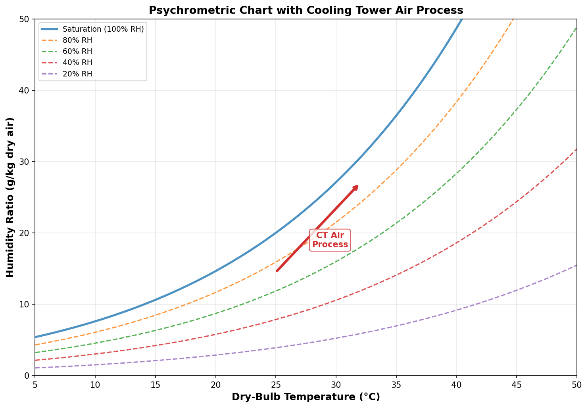

Psychrometrics¶
Overview¶
Psychrometrics is the study of the thermodynamic properties of moist air. Accurate psychrometric calculations are essential for cooling tower analysis because both the driving force for heat transfer (enthalpy difference) and the driving force for mass transfer (humidity ratio difference) depend on the thermodynamic state of the air.

Saturation Vapor Pressure¶
The saturation vapor pressure of water, \( p_s(T) \), is calculated using the ASHRAE correlation (ASHRAE, 2017):
where \( T \) is in Kelvin and \( p_s \) in Pascals. The coefficients are:
| Coefficient | Value | Applicable Range |
|---|---|---|
| \( C_1 \) | -5.8002206 x 10³ | 273.15 K to 473.15 K |
| \( C_2 \) | 1.3914993 | |
| \( C_3 \) | -4.8640239 x 10⁻² | |
| \( C_4 \) | 4.1764768 x 10⁻⁵ | |
| \( C_5 \) | -1.4452093 x 10⁻⁸ | |
| \( C_6 \) | 6.5459673 |
In this implementation, the Antoine-type correlation is used for computational efficiency:
Temperature in Kelvin
All psychrometric equations in this implementation use absolute temperature (Kelvin). Ensure correct conversion from user inputs.
Humidity Ratio¶
The humidity ratio (or moisture content) \( w \) is the mass of water vapor per unit mass of dry air.
From Relative Humidity¶
Given the relative humidity \( \phi \) and dry-bulb temperature \( T_{db} \):
where \( P_{atm} \) is the atmospheric pressure (Pa).
From Wet-Bulb Temperature¶
The humidity ratio can also be determined from the wet-bulb temperature using the psychrometric equation (ASHRAE, 2017):
where:
- \( T_{db} \), \( T_{wb} \) are in degrees Celsius
- \( w_s(T_{wb}) \) is the saturation humidity ratio at the wet-bulb temperature
Moist Air Enthalpy¶
The enthalpy of moist air per unit mass of dry air is:
In simplified form (temperatures in Celsius):
where:
- \( c_{pa} = 1.006 \) kJ/(kg·K) — specific heat of dry air
- \( c_{pv} = 1.86 \) kJ/(kg·K) — specific heat of water vapor
- \( h_{fg,0} = 2501 \) kJ/kg — latent heat of vaporization at 0 °C
Saturated Air Enthalpy¶
The enthalpy of saturated air at a given temperature is obtained by setting \( w = w_s(T) \):
This is the saturation enthalpy curve and plays a central role in both the Merkel and Poppe methods.
Latent Heat of Vaporization¶
The latent heat of vaporization decreases with increasing temperature:
where \( T_C \) is the temperature in degrees Celsius. At 40 °C, \( h_{fg} \approx 2{,}408 \) kJ/kg.
Lewis Factor¶
The Lewis factor (or Lewis number relation) relates the heat and mass transfer coefficients:
where:
- \( h_c \) = convective heat transfer coefficient (W/m²·K)
- \( h_D \) = mass transfer coefficient (kg/m²·s)
- \( c_{pm} \) = specific heat of moist air (kJ/kg·K)
Merkel vs Poppe
The Merkel method assumes \( Le_f = 1 \) (Lewis analogy), which simplifies the governing equations by combining sensible and latent heat transfer into a single enthalpy driving force. The Poppe method accounts for \( Le_f \neq 1 \), providing more accurate results especially when the air approaches saturation.
The Bosnjakovic formula (Bosnjakovic, 1965) is commonly used:
Water Specific Heat¶
The specific heat of liquid water varies with temperature. The implementation uses a temperature-dependent correlation:
At the commonly used reference condition of 15.6 °C (60 °F): \( c_{pw} = 4.186 \) kJ/(kg·K).
Impact on Merkel Number
Using a constant \( c_{pw} = 4.186 \) kJ/(kg·K) instead of a temperature-dependent value introduces errors of approximately 0.5-1.5% in the calculated KaV/L, which is within engineering accuracy for most applications.
References¶
-
ASHRAE. ASHRAE Handbook — Fundamentals, Chapter 6: Psychrometrics. American Society of Heating, Refrigerating and Air-Conditioning Engineers, Atlanta, GA, 2017. https://www.ashrae.org/
-
Bosnjakovic, F. Technische Thermodynamik. Theodor Steinkopff, Dresden, 1965.
-
Kroger, D.G. Air-Cooled Heat Exchangers and Cooling Towers: Thermal-Flow Performance Evaluation and Design, Vol. II. PennWell Books, Tulsa, OK, 2004. ISBN: 978-0878148967.
-
Singh, K. and Das, R. "An experimental and multi-objective optimization study of a forced draft cooling tower with different fills." Energy Conversion and Management, Vol. 111, pp. 417-430, 2016. https://doi.org/10.1016/j.enconman.2015.12.080